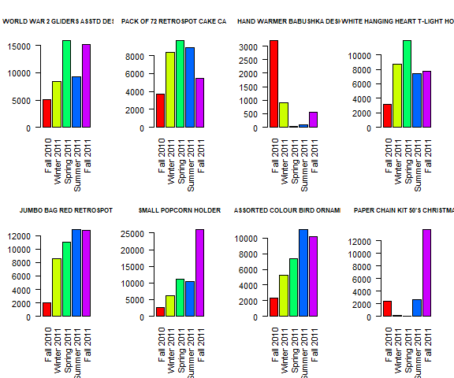
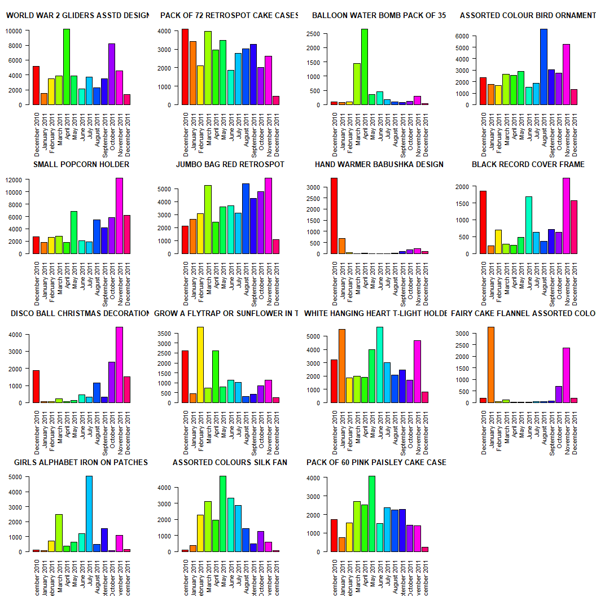
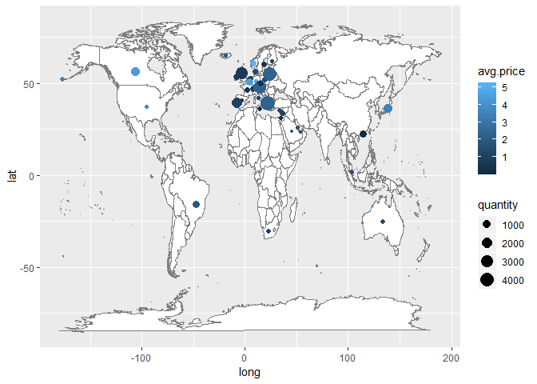

Introduction
Online retail and shopping has been an emerging and booming industry in the past decade. For example, everybody knows about Amazon.com and how it is the largest online retailer in the world, constantly expanding its services and products. The convenience of online shopping is attractive to consumers and as such they are continually trending towards it. In our project, we analyze data from a UK-based non-store online retailer which sells unique all-occasion gifts to mainly wholesalers.
Material and Methods
The data can be found at: http://archive.ics.uci.edu/ml/datasets/Online+Retail
Attribute Information: The data consists of 541,909 observations of these variables. This is a transnational data set which contains all the transactions occurring between December 1, 2010 and December 9, 2011 for a UK-based and registered non-store online retail. The company mainly sells unique all-occasion gifts. Many customers of the company are wholesalers.
To analyze the data, we used the packages to visualize the countries and plot them on a world map, and base plotting functions to visualize the data, and base string manipulation functions (such as strsplit) to work with the invoice dates, and and to make manipulating the data easier.
Results
Does the popularity of products change with respect to time (season, month, etc.)?
To answer this question, we began by finding the start and end dates of seasons for the years 2010 and 2011. The relevant dates and seasons are: Then, we created each season and their corresponding range of dates before extracting the dates from the invoice dates. Using these dates, we categorized our data into seasons. From this, we separated the individual products and their corresponding quantities sold. Then, we made sure to compare only items that net at least one sale in every season throughout the year. We found that there were 1933 products that satisfied this criteria. It was a bit much to analyze all of these products individually, so instead we opted to find the top 3 products sold per season over the entire year. We ended up with the following 8 products:
## [1] "WORLD WAR 2 GLIDERS ASSTD DESIGNS"
## [2] "PACK OF 72 RETROSPOT CAKE CASES"
## [3] "HAND WARMER BABUSHKA DESIGN"
## [4] "WHITE HANGING HEART T-LIGHT HOLDER"
## [5] "JUMBO BAG RED RETROSPOT"
## [6] "SMALL POPCORN HOLDER"
## [7] "ASSORTED COLOUR BIRD ORNAMENT"
## [8] "PAPER CHAIN KIT 50'S CHRISTMAS"
Then we plotted the quantities sold for each of these products over the year from which this data was gathered. It is important to note that we do not have full data for some seasons! Fall 2010 only has 3 weeks worth of data and Fall 2011 is missing 11 days of data. However, we can still see some general trends in popularity of products throughout the seasons. We look into this closer in the next section where we separate the data by month instead of season.

Since seasons cover a lot of days, we may have lost some details in trends of products. To remedy this we divided the data by months. We began by extracting the month and year from the invoice dates and used those as factors by which we split the data. Now that we had our data split by month, we separated the individual products and their corresponding quantities. Then, we made sure to compare only items that net at least one sale in every month throughout the year. We found that there were 1116 products that satisfied this criteria. It was a bit much to analyze all of these products individually, so instead we opted to find the top 3 products sold per month over the entire year. We ended up with the following 15 products:
## [1] "WORLD WAR 2 GLIDERS ASSTD DESIGNS"
## [2] "PACK OF 72 RETROSPOT CAKE CASES"
## [3] "BALLOON WATER BOMB PACK OF 35"
## [4] "ASSORTED COLOUR BIRD ORNAMENT"
## [5] "SMALL POPCORN HOLDER"
## [6] "JUMBO BAG RED RETROSPOT"
## [7] "HAND WARMER BABUSHKA DESIGN"
## [8] "BLACK RECORD COVER FRAME"
## [9] "DISCO BALL CHRISTMAS DECORATION"
## [10] "GROW A FLYTRAP OR SUNFLOWER IN TIN"
## [11] "WHITE HANGING HEART T-LIGHT HOLDER"
## [12] "FAIRY CAKE FLANNEL ASSORTED COLOUR"
## [13] "GIRLS ALPHABET IRON ON PATCHES"
## [14] "ASSORTED COLOURS SILK FAN"
## [15] "PACK OF 60 PINK PAISLEY CAKE CASES"
Then we plotted the quantities sold for each of these products over the year from which this data was gathered. Again, it is important to note that we do not have full data for December 2011! Specifically, we only had 9 days worth of data from this month. However, this still gives us a complete year’s coverage from December 2010 to November 2011.

Which products are the most profitable for this company? What about least profitable?
We defined profit of a product by (net) quantity sold × unit price.
Items that made more than $50,000 in profit were:
## Item Profit
## 1 PAPER CHAIN KIT 50'S CHRISTMAS 63791.94
## 2 SMALL POPCORN HOLDER 50987.47
## 3 REGENCY CAKESTAND 3 TIER 164762.19
## 4 PICNIC BASKET WICKER SMALL 51041.37
## 5 RABBIT NIGHT LIGHT 66756.59
## 6 PARTY BUNTING 98302.98
## 7 CHILLI LIGHTS 53768.06
## 8 ASSORTED COLOUR BIRD ORNAMENT 58959.73
## 9 JUMBO BAG RED RETROSPOT 92356.03
## 10 WHITE HANGING HEART T-LIGHT HOLDER 97894.50
## 11 DOTCOM POSTAGE 206245.48
## 12 POSTAGE 66230.64
Items that made less than $1, but did not lose the company money were:
## Item Profit
## 1 VINTAGE BLUE TINSEL REEL 0.840
## 2 FEATHER PEN,COAL BLACK 0.830
## 3 3 WICK CHRISTMAS BRIAR CANDLE 0.970
## 4 HAPPY BIRTHDAY CARD TEDDY/CAKE 0.950
## 5 CAT WITH SUNGLASSES BLANK CARD 0.950
## 6 WHITE BEADED GARLAND STRING 20LIGHT 0.800
## 7 PINK CRYSTAL GUITAR PHONE CHARM 0.850
## 8 PADS TO MATCH ALL CUSHIONS 0.003
Note that there were 198 items that made less than $10, but it would be wasteful to print all 198 of them, so we went with a smaller threshold of $1.
Items that made no money ($0) were:
## Item Profit
## 1 HANGING RIDGE GLASS T-LIGHT HOLDER 0
## 2 TRAVEL CARD WALLET DOTCOMGIFTSHOP 0
## 3 PAPER CRAFT , LITTLE BIRDIE 0
## 4 BLACK CHERRY LIGHTS 0
The most profitable item (that was not postage) was REGENCY CAKESTAND 3 TIER making the company $164,762.19.
Which products are the most popular in certain countries? Is there a difference in price between countries? How does this affect sales?
We split our data by country before looking at individual products and their quantities sold. We also found the average unit price for the most popular products within each country. In the end we found: We noticed that we had some duplicate items in our data frame. That is, some items were popular in more than one country. We checked the average prices of these items between countries and found that there was no difference in price between countries.
This was surprising at first, but then we remembered that prices are in British pounds and that online postage accounted for $206,245.48 of this company’s profit. So, of course unit price per product would be consistent because the company would charge more for postage depending on country. We then proceeded to visualize this information by plotting the quantity and average price of the most popular product bought by country.

Conclusion and Discussion
In conclusion, we would offer the following advice to this online retailer. First, stock up on items before peak sales occur such as Christmas time for hand warmers. Second, get rid of low profit items and items that do not make any money. Third, recognize that business booms around the holiday season and they should plan accordingly. Also, they could try to do something special about countries’ most popular products such as special deals to boost sales.
Although our analysis answered questions that we thought were initially interesting about this dataset, we quickly found that new questions emerged from our analysis. For example, we would have liked to analyze separate products individually such as the regency cakestands that brought in the most profit for this company. We could use time series to model its price and also compare it with different customers. In addition, we would have liked to find the most popular and profitable customers for this company and see if they could expand their business further by making deals with them.
Distribution of work
Code Appendix
setwd("C:/Users/Christopher/Desktop/STA 141A/Project")
library(data.table)
online.retail <- as.data.frame(fread("Online Retail.csv"))
attach(online.retail)
################################################################################
# Does the popularity of products change with respect to time (season, month, etc.)?
library(dplyr)
library(stringr)
### Seasons
## Equinox/Solstice times
# 2010: Fall: Sep 23, 2010 Winter: Dec 21, 2010
# 2011: Spring: Mar 20, 2011 Summer: Jun 21, 2011 Fall: Sep 23, 2011 Winter: Dec 21, 2011
Date2 <- str_extract(InvoiceDate, "\\d{1,2}\\/\\d{1,2}\\/\\d{4}")
Date2 <- as.Date(Date2, "%m/%d/%Y")
f2010 <- seq(as.Date("2010-9-23"), as.Date("2010-12-20"), "day")
w2010 <- seq(as.Date("2010-12-21"), as.Date("2011-3-19"), "day")
s2011 <- seq(as.Date("2011-3-20"), as.Date("2011-6-20"), "day")
su2011 <- seq(as.Date("2011-6-21"), as.Date("2011-9-22"), "day")
f2011 <- seq(as.Date("2011-9-23"), as.Date("2011-12-20"), "day")
# Data split by seasons (data frames)
library(dplyr)
online.retail.f2010 <- filter(online.retail, Date2 %in% f2010)
online.retail.w2010 <- filter(online.retail, Date2 %in% w2010)
online.retail.s2011 <- filter(online.retail, Date2 %in% s2011)
online.retail.su2011 <- filter(online.retail, Date2 %in% su2011)
online.retail.f2011 <- filter(online.retail, Date2 %in% f2011)
# List of 5 data frames, each with a season name
online.retail.seasons <- list("Fall 2010" = online.retail.f2010,
"Winter 2011" = online.retail.w2010,
"Spring 2011" = online.retail.s2011,
"Summer 2011" = online.retail.su2011,
"Fall 2011" = online.retail.f2011)
# Separating quantities by product and season
quantities.seasons <- lapply(1:length(online.retail.seasons), function(i){
a <- online.retail.seasons[[i]]
# Summing over all quantities to get the total instead of single quantity
# observations using an lapply.
quantities <- lapply(split(a$Quantity, a$StockCode), sum)
return (quantities)
})
names(quantities.seasons) <- names(online.retail.seasons)
# Calls can be made by quantities$'(Season Year)'$(StockCode)
# Making sure we only compare the same items sold throughout the year
# There is no way around a for loop here since this is a recursive process
same.products.seasons <- intersect(names(quantities.seasons[[1]][which(quantities.seasons[[1]] > 0)]), names(quantities.seasons[[2]][which(quantities.seasons[[2]] > 0)]))
for (i in 3:(length(quantities.seasons))) {
same.products.seasons <- intersect(same.products.seasons, names(quantities.seasons[[i]][which(quantities.seasons[[i]] > 0)]))
}
# There are 1933 products that net at least 1 sale every season
# Sorting the quantities sold
quantities.sorted.seasons <- lapply(1:length(quantities.seasons), function(i){
L <- quantities.seasons[[i]][same.products.seasons]
sorted <- L[order(sapply(L, function(x) x[1], simplify=TRUE), decreasing=TRUE)]
return(sorted)
})
names(quantities.sorted.seasons) <- names(online.retail.seasons)
top.quantities.sorted.seasons <- lapply(quantities.sorted.seasons, function(x) head(x, 3))
# All top 3 items sold per season over the entire year
top.products.seasons <- union(names(top.quantities.sorted.seasons[[1]]), names(top.quantities.sorted.seasons[[2]]))
for (i in 3:(length(quantities.seasons))) {
top.products.seasons <- union(top.products.seasons, names(top.quantities.sorted.seasons[[i]]))
}
# Finding the quantity sold of each of these items per season
quantities.sold.seasons <- lapply(1:length(quantities.seasons), function(i){
a <- quantities.seasons[[i]][top.products.seasons]
return(a)
})
names(quantities.sold.seasons) <- names(online.retail.seasons)
# Finding the item descriptions from StockCode
items.seasons <- sapply(1:length(top.products.seasons), function(i) {head(filter(online.retail, StockCode == top.products.seasons[i]), 1)$Description})
# Plotting all of this information
item.seasons <- lapply(1:length(items.seasons), function(i){
d <- sapply(quantities.sold.seasons, '[[', i)
return(d)
})
names(item.seasons) <- items.seasons
d.seasons <- data.frame(item.seasons)
par(mfrow = c(2, 4), mar = c(6, 4, 4, 2) + 0.1)
PlotQuantitiesSeasons <- function(d.seasons){
for (i in 1:ncol(d.seasons)) {
barplot(d.seasons[, i], col = rainbow(length(rownames(d.seasons))), names.arg = rownames(d.seasons), las = 2,
main = items.seasons[i], cex.main = 0.75)
}
}
PlotQuantitiesSeasons(d.seasons)
# All of these items were at one point the 3 most popular items in a month
# Note we do not have full data for Fall 2010!!! Only about 3 weeks worth of data.
# Also, Fall 2011 is missing 11 days of data!!!
# Reset plotting parameters
par(mfrow = c(1, 1), mar = c(5, 4, 4, 2) + 0.1)
### Month
# Get the month, day, year
Date <- str_extract(InvoiceDate, "\\d{1,2}\\/\\d{1,2}\\/\\d{4}")
# Reformat the dates
Date <- as.Date(Date, "%m/%d/%Y")
Date <- format(Date, format = "%B %d, %Y")
# Getting the month and year
mon <- str_extract(Date, "[A-Z][a-z]+")
year <- str_extract(Date, "(?<=\\,\\s)\\d{4}")
# Adding factors containing month and year to the data
MonthYear <- as.factor(str_c(mon, year, sep = " "))
online.retail$MonthYear <- MonthYear
# Data split by month and year (big list)
online.retail.monthyear <- split(online.retail, MonthYear)
# Separating quantities by product and month/year
quantities <- lapply(1:length(online.retail.monthyear), function(i){
a <- online.retail.monthyear[[i]]
# Summing over all quantities to get the total instead of single quantity
# observations using an lapply.
quantities <- lapply(split(a$Quantity, a$StockCode), sum)
return (quantities)
})
names(quantities) <- names(online.retail.monthyear)
# Calls can be made by quantities$'(Month Year)'$(StockCode)
# Making sure we only compare the same items sold throughout the year
# There is no way around a for loop here since this is a recursive process
same.products.monthyear <- intersect(names(quantities[[1]][which(quantities[[1]] > 0)]), names(quantities[[2]][which(quantities[[2]] > 0)]))
for (i in 3:(length(quantities))) {
same.products.monthyear <- intersect(same.products.monthyear, names(quantities[[i]][which(quantities[[i]] > 0)]))
}
# There are 1116 products that net at least 1 sale and was sold every month for the year
# Sorting the quantities sold
quantities.sorted <- lapply(1:length(quantities), function(i){
L <- quantities[[i]][same.products.monthyear]
sorted <- L[order(sapply(L, function(x) x[1], simplify=TRUE), decreasing=TRUE)]
return(sorted)
})
names(quantities.sorted) <- names(online.retail.monthyear)
top.quantities.sorted <- lapply(quantities.sorted, function(x) head(x, 3))
# All top 3 items sold per month over the entire year
top.products.monthyear <- union(names(top.quantities.sorted[[1]]), names(top.quantities.sorted[[2]]))
for (i in 3:(length(quantities))) {
top.products.monthyear <- union(top.products.monthyear, names(top.quantities.sorted[[i]]))
}
# Finding the quantity sold of each of these items per month
quantities.sold.monthyear <- lapply(1:length(quantities), function(i){
a <- quantities[[i]][top.products.monthyear]
return(a)
})
names(quantities.sold.monthyear) <- names(online.retail.monthyear)
# Reordering the months into chronological order
month.order <- c(3,6,5,9,1,10,8,7,2,13,12,11,4)
quantities.sold.monthyear <- quantities.sold.monthyear[month.order]
# Finding the item descriptions from StockCode
items <- sapply(1:length(top.products.monthyear), function(i) {head(filter(online.retail, StockCode == top.products.monthyear[i]), 1)$Description})
# Plotting all of this information
item.monthyear <- lapply(1:length(items), function(i){
d <- sapply(quantities.sold.monthyear, '[[', i)
return(d)
})
names(item.monthyear) <- items
d <- data.frame(item.monthyear)
par(mfrow = c(4, 4), mar = c(6, 4, 4, 2) + 0.1)
PlotQuantities <- function(d){
for (i in 1:ncol(d)) {
barplot(d[, i], col = rainbow(length(rownames(d))), names.arg = rownames(d), las = 2,
main = items[i])
}
}
PlotQuantities(d)
# All of these items were at one point the 3 most popular items in a month
# Note we do not have full data for December 2011!!! Only 9 days worth of data.
# Reset plotting parameters
par(mfrow = c(1, 1), mar = c(5, 4, 4, 2) + 0.1)
################################################################################
# Which products are the most profitable for this company? What about least profitable?
# Split the data frame by products
# Note the abnormalities in Description including 'amazon' and 'refund', so instead
# we use the StockCode to identify products
online.retail.products <- split(online.retail, StockCode)
# Total sales from each item. Note that some of them are adjusting bad debt and
# Amazon fees, bank charges, discounts, etc.
total.profit <- sapply(1:length(online.retail.products), function(i){
total.profit <- sum(online.retail.products[[i]]$Quantity * online.retail.products[[i]]$UnitPrice)
return (total.profit)
})
# Which products made more than $50,000
max.profit.ind <- which(total.profit > 50000)
max.profit.items <- sapply(1:length(max.profit.ind), function(i){
# Get the product descriptions
products <- sapply(online.retail.products[max.profit.ind], '[', 3)[[i]][1]
# Return only one of them
return (products)
})
# Corresponding item and profit
max.profit.items.df <- data.frame(Item = max.profit.items,
Profit = total.profit[max.profit.ind])
# Which profits made less than $1 (but more than $0)?...
min.profit.ind <- which(total.profit < 1 & total.profit > 0)
min.profit.items <- sapply(1:length(min.profit.ind), function(i){
# Get the product descriptions
products <- sapply(online.retail.products[min.profit.ind], '[', 3)[[i]][1]
# Return only one of them
return (products)
})
min.profit.ind[which(min.profit.items == "")] <- NA
min.profit.ind <- min.profit.ind[!is.na(min.profit.ind)]
min.profit.items[which(min.profit.items == "")] <- NA
min.profit.items <- min.profit.items[!is.na(min.profit.items)]
# Corresponding item and profit
min.profit.items.df <- data.frame(Item = min.profit.items,
Profit = total.profit[min.profit.ind])
# Which profits made no money ($0)?
zero.profit.ind <- which(total.profit == 0)
zero.profit.items <- sapply(1:length(zero.profit.ind), function(i){
# Get the product descriptions
products <- sapply(online.retail.products[zero.profit.ind], '[', 3)[[i]][1]
# Return only one of them
return (products)
})
zero.profit.items[which(zero.profit.items == "")] <- NA
zero.profit.items <- zero.profit.items[!is.na(zero.profit.items)]
zero.profit.items <- unique(zero.profit.items)
zero.profit.items <- str_extract(zero.profit.items, "[A-Z]{2,}[A-Z\\,\\s\\-]+")
zero.profit.items <- zero.profit.items[!is.na(zero.profit.items)]
# Corresponding item and profit
zero.profit.items.df <- data.frame(Item = zero.profit.items,
Profit = 0)
# Which item generated the most profit/sales/income (that is not postage)?
best.profit.ind <- which(total.profit == 164762.19)
best.profit.item <- sapply(1:length(best.profit.ind), function(i){
# Get the product descriptions
products <- sapply(online.retail.products[best.profit.ind], '[', 3)[[i]][1]
# Return only one of them
return (products)
})
################################################################################
# Which products are the most popular in certain countries? Is there a difference in price between countries? How does this affect sales?
# Data split by Country
online.retail.countries <- split(online.retail, Country)
# Separating quantities by product and country
quantities.countries <- lapply(1:length(online.retail.countries), function(i){
a <- online.retail.countries[[i]]
# Summing over all quantities to get the total instead of single quantity
# observations using an lapply.
quantities <- lapply(split(a$Quantity, a$StockCode), sum)
return (quantities)
})
names(quantities.countries) <- names(online.retail.countries)
# Sorting the quantities sold
quantities.sorted.countries <- lapply(1:length(quantities.countries), function(i){
L <- quantities.countries[[i]]
sorted <- L[order(sapply(L, function(x) x[1], simplify=TRUE), decreasing=TRUE)]
return(sorted)
})
names(quantities.sorted.countries) <- names(online.retail.countries)
# Finding the best seller within each country
top.quantities.sorted.countries <- lapply(quantities.sorted.countries, function(x) head(x, 1))
# Finding the item descriptions from StockCode
items.countries <- sapply(1:length(top.quantities.sorted.countries), function(i){
a <- head(filter(online.retail, StockCode == names(top.quantities.sorted.countries[[i]])), 1)$Description
return (a)
})
# Finding the average unit price of these items
items.price <- sapply(1:length(top.quantities.sorted.countries), function(i){
a <- mean(filter(online.retail, StockCode == names(top.quantities.sorted.countries[[i]]))$UnitPrice)
return (a)
})
# Putting everything together into a data frame
items.sold.countries <- data.frame(quantity = unlist(top.quantities.sorted.countries),
item = items.countries,
avg.price = items.price)
rownames(items.sold.countries) <- names(quantities.sorted.countries)
# Finding the duplicate items so we can compare them between countries
duplicate.items <- unique(items.sold.countries[duplicated(items.sold.countries$item), ]$item)
items.sold.countries.dup <- lapply(1:length(duplicate.items), function(i){
a <- subset(items.sold.countries, item == duplicate.items[i])
return (a)
})
names(items.sold.countries.dup) <- duplicate.items
# As it turns out, there is no difference in price between countries
# Plotting all of this information
library(ggmap)
#Using GGPLOT, plot the Base World Map
mp <- NULL
mapWorld <- borders("world", colour="gray50", fill="white") # create a layer of borders
mp <- ggplot() + mapWorld
# Get the country names
country.names <- unique(Country)
country.names[which(country.names == "Unspecified")] <- NA
country.names[which(country.names == "European Community")] <- NA
country.names <- as.character(na.omit(country.names))
# Get the country locations (lat and lon)
country.locations <- geocode(country.names)
country.locations[which(country.names == "Brazil"), ] <- geocode("Brasilia, Federal District, Brazil")
country.locations[which(country.names == "RSA"), ] <- geocode("South Africa")
# Quantity = size
# avg price = color
items.sold.countries.plot <- items.sold.countries[-c(33, 36), ]
mp + geom_point(data = items.sold.countries.plot, aes(x = country.locations$lon, y = country.locations$lat, col = avg.price, size = quantity))